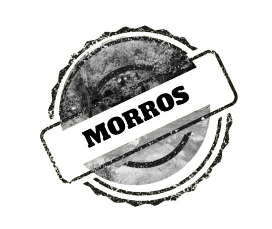
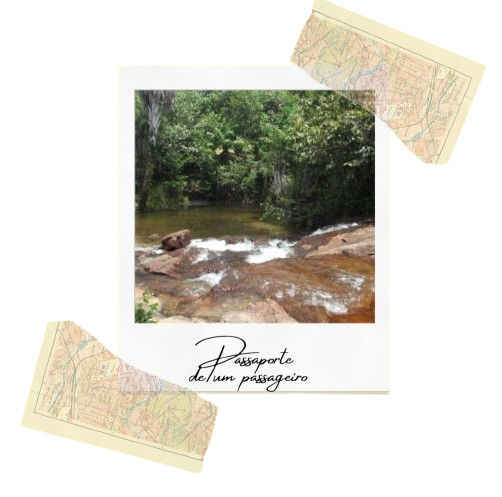
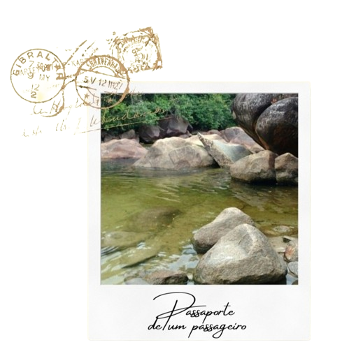
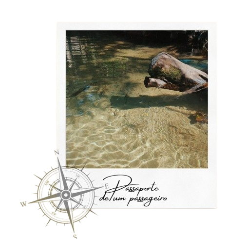

Conheça Morros!



Clique aqui para saber a sua localização!

Explorar os rios de Morros é uma oportunidade de se desconectar da rotina e
se reconectar com a natureza, desfrutando de momentos de paz e aventura em um dos cenários
mais
pitorescos do Maranhão. Então, prepare-se para descobrir a beleza serena e a vitalidade dos
rios
de Morros – uma experiência que certamente deixará memórias inesquecíveis.
Não se esqueça de levar protetor solar, repelente e uma câmera para
registrar os momentos incríveis que certamente viverá por lá!